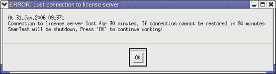

Losing connection to license server
In case you loose connection to the license server (for example, due to a network outage) the software will continue working for 12 hours. After that time it will shutdown automatically.
A window (see below) is displayed every 30 minutes to inform you about the lost connection and the remaining time for which the software can still be used.

Functional changes
- Introduced before SmarTest 6.3.2
- SmarTest 6.5.0: Changed name and location of configuration file: /etc/opt/hp93000/soc_common/flexlm.cfg